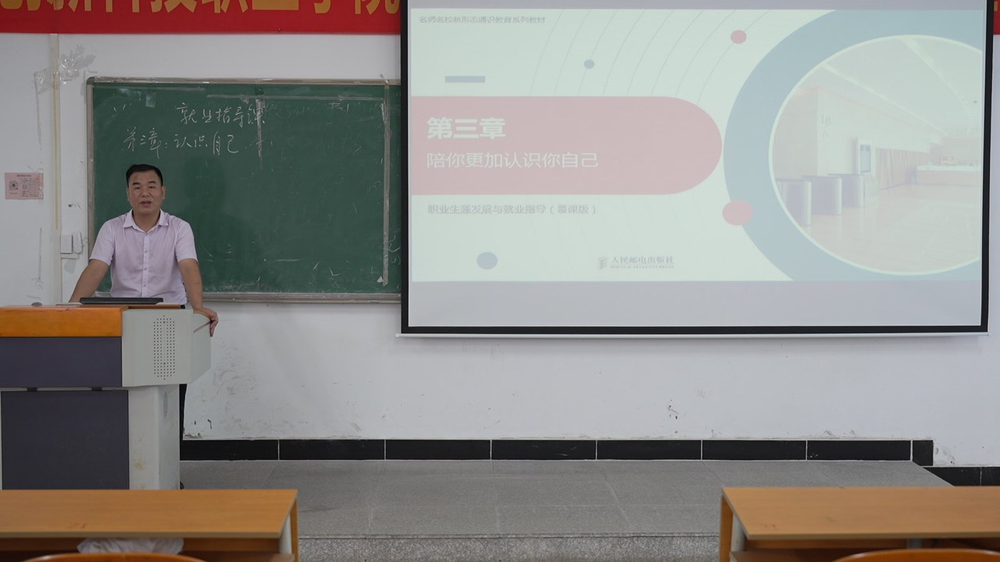

走近青年
先理解，再引导
雷一鸣工作室由雷一鸣老师主导，其本名为雷桂平。同济大学软件工程专业毕业，讲师、国家二级心理咨询师，长期从事辅导员工作与大学生思想政治教育研究。
在十余年一线工作中，他持续记录学生成长中的故事与困惑，撰写思想政治教育相关文章数十万字，并把这些观察转化为教材、论文与可交流的育人经验。

一个灵魂唤醒另一个灵魂，一朵云去推动另一朵云。
主动走近青年、倾听青年，真情关心青年、关爱青年，悉心教育青年、引导青年。
同济大学软件工程专业毕业
讲师、国家二级心理咨询师
广东科技学院辅导员工作经历
从事辅导员工作十余年
主编心理学教材两部、计算机专业教材一部
《辅导员职业技能大赛》教材第一副主编
参与广东科技学院创业基础教材编写
参与团中央课题一项，已结项
发表学生工作相关论文 10 余篇，一篇获广东省三等奖
《用青春构筑心中的大学梦》收录于《全国高校优秀辅导员给大学生的100封信》
学院「优秀教师」「优秀辅导员」
东莞市三星级志愿者、学院辩论赛优秀奖、微党课比赛三等奖
雷一鸣工作室主持人
中国大学生在线专栏作者
情感类微信公众号《在灯火阑珊处》主持人
广东省名辅导员林路生工作室、广东省骨干辅导员工作室、广东省辅导员大学生思想理论教育工作室成员
先理解，再引导
在对话中回应困惑
把观察沉淀为方法